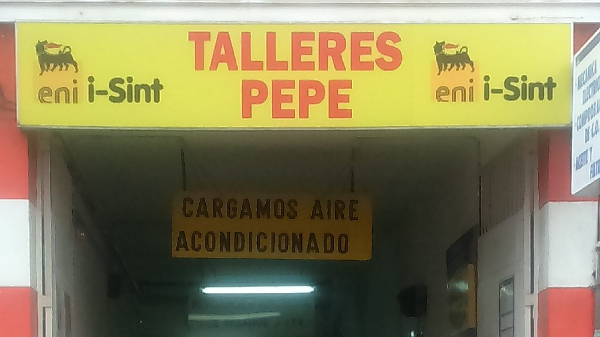
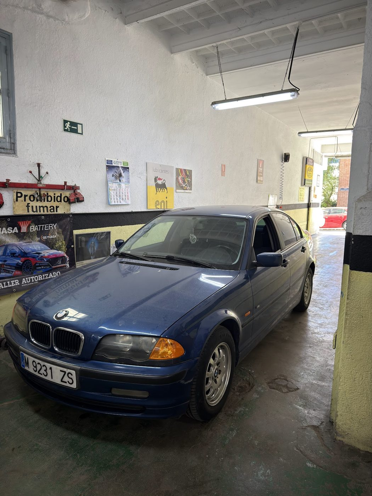
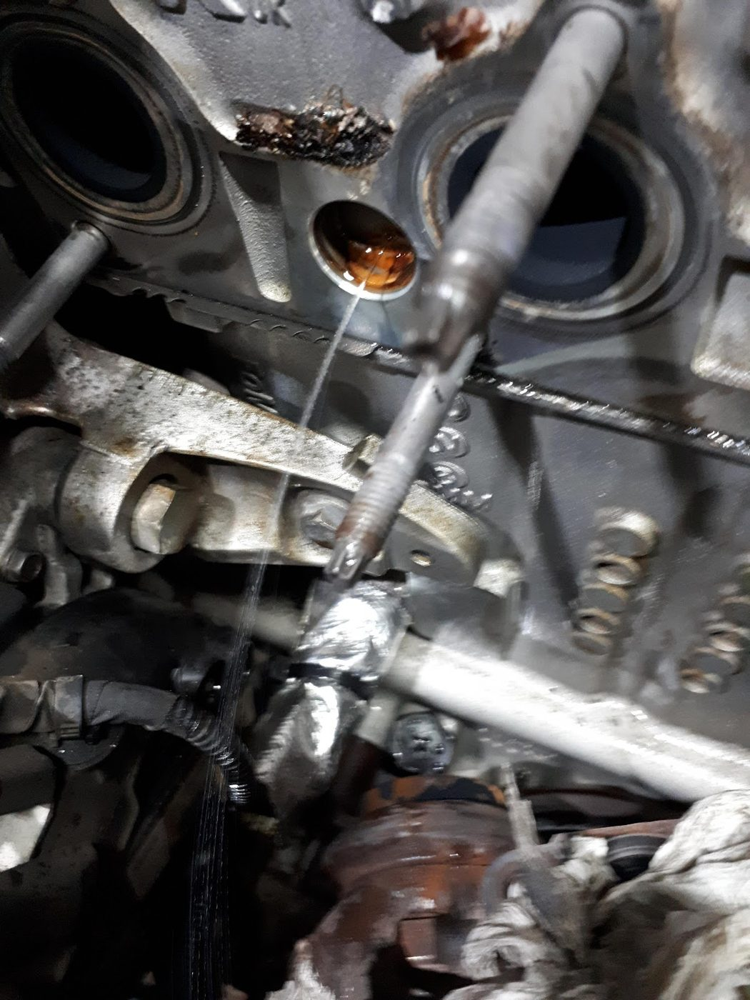
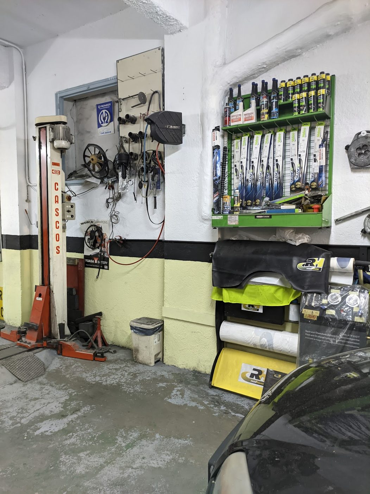
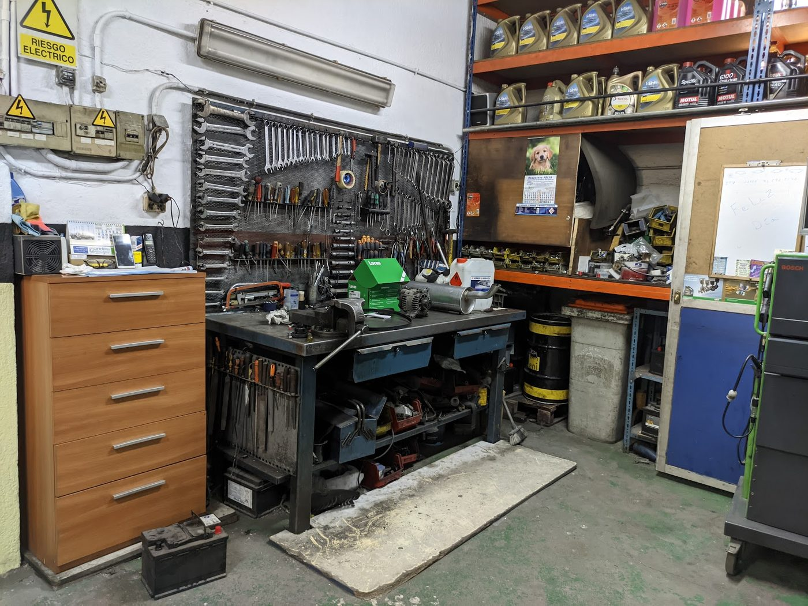

Electromecánica
Diagnóstico y reparación de sistemas eléctricos.
Presupuesto cerrado antes de tocar el coche

Talleres Pepe es un negocio de Taller de reparación de automóviles valorado con 5.0 estrellas por 80 clientes en Google.
Diagnóstico y reparación de sistemas eléctricos.
Cambio y equilibrado, revisión del sistema de frenado.
Revisión previa para pasarla a la primera.



